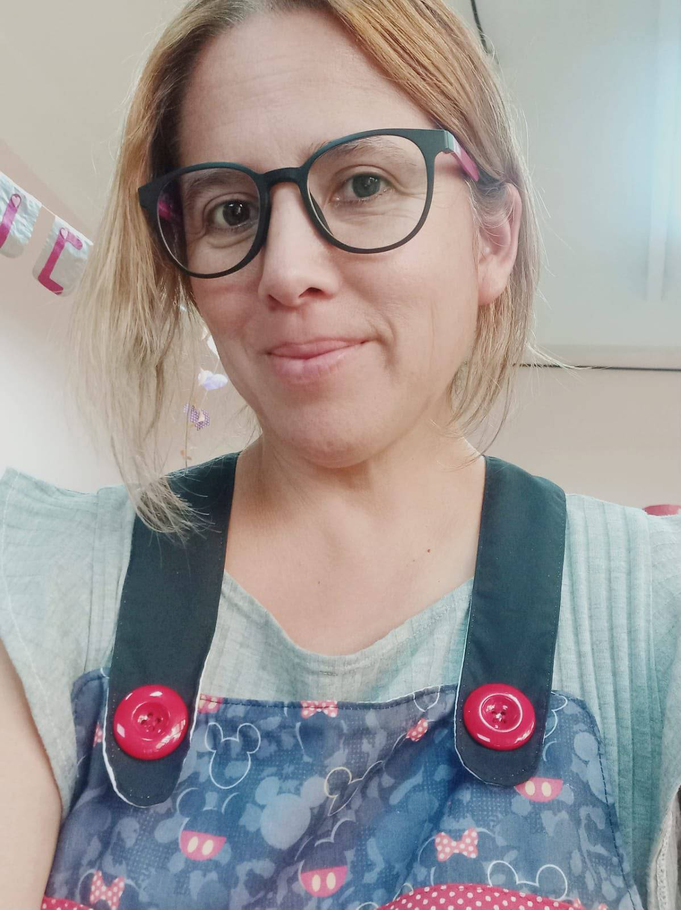

Volvé a escucharte. Tu cuerpo también tiene respuestas.
¿Hace cuánto tiempo venís estando para todos y dejando para después lo que te pasa a vos? Quizás estás cansada de sostener, resolver y cumplir. Y aunque sabés que necesitás un cambio, la cabeza no tiene todas las respuestas.
“Pensamos. Analizamos. Intentamos entender. Pero hay algo que muchas veces dejamos afuera: EL CUERPO TAMBIÉN HABLA.”
Dos caminos para volver a vos
Cada mujer está en un momento diferente
Por eso, hoy podés recorrer este proceso de dos maneras diseñadas según tus necesidades actuales.
Proceso Grupal
Volver a Vos
Un proceso de 8 semanas para mujeres que quieren volver a escucharse, conectar con su cuerpo y transformar lo que descubren en acciones concretas junto a otras mujeres.
“Mi recorrido con Abi fue hace algunos años pero aún hoy tiene impacto en mi vida. A mis 18 años me acerqué a ella con el deseo de que me ayude a entender qué estudiar. Con el tiempo empecé a entender que eso iría apareciendo de a poco, pero para que eso suceda, necesité de su espacio para amigarme con mis emociones, para darles nombre, color, textura. Un espacio de mucho amor que me contuvo en ese momento de tanta angustia e incertidumbre. Recuerdo que con ella pude empezar a abrirme de formas que no había podido hacer antes, construimos un espacio juntas de introspección, cariño, siempre con un té de por medio. Estoy muy agradecida de haberme encontrado con su espacio en un momento tan definitivo de mi vida. Hoy por hoy estudio la carrera más hermosa del mundo y mi relación con mis emociones es un proceso consciente y amoroso. Gracias Abi!”
— Maiky
“Hago Arteterapia con Abi desde hace 10 años. En ese proceso aprendí mucho sobre mi misma, a entenderme, comprender mis tiempos y necesidades y respetarlos. Abi hace bien! y por eso la sigo eligiendo como terapeuta. Hace un año y medio que hago yoga con ella también. Fue una experiencia muy reveladora para mi, porque descubrí que me ayuda no solo a mi cuerpo físico, sino tambien a mi mente y mi alma. Las clases son al estilo de Abi, personalizadas y con mucho amor. Abi está siempre atenta a cada detalle, con la palabra justa y buscando siempre distintas formas de ayudarme a crecer. ¡Gracias, Abi!”
— Sabrina
“Este año comencé en el Taller de meditación junto a Abi y a un grupo maravilloso, un camino para aprender a observarme sin juzgarme y siento que de a poco logro ver mis pensamientos sin forzar mi mente. Gracias”
— Rosa María Herman

“Las puertas de Abi las abrí en 2018 gracias a mi amiga que me la recomendó. Fue un recorrido colmado de escucha, sostén, aprendizaje, vivencias y mucha entrega. Encontré en ella lo que mi vida necesitaba en aquel momento. Fueron 7 años de crecimiento para mí y sé que esa puerta sigue abierta para volver alguna vez. Te quiero mucho Abi. Gracias por haber sido parte de mi vida!”
— Caro
🌿 ¿Qué es Cuerpo Raíz?
Una forma de acompañarte a volver a vos
No se trata solamente de hablar sobre lo que te pasa. Se trata de poder reconocerlo también en tu cuerpo. Saber que algo tiene que cambiar no siempre alcanza; por eso integramos diferentes caminos para transformar la información en movimiento.
01.
Palabra
Primero ponemos en palabras lo que estás viviendo y transitando hoy.
02.
Cuerpo
Aprendemos a registrar cómo eso aparece y se manifiesta en tu cuerpo.
03.
Reconocimiento
Exploramos y sentimos qué información real aparece desde el registro somático.
04.
Acción
Nos preguntamos: ¿Qué puedo hacer diferente con esto que ahora sé de mí?
Ahí aparece la Pantera
La Pantera representa esa parte tuya que puede avanzar. La que recupera su fuerza, reconoce lo que necesita, toma decisiones y deja de quedarse solamente pensando para empezar a moverse.
🌿 Programa Grupal Virtual
Volver a Vos · 8 Semanas
Un espacio para frenar, escucharte, registrar dónde estás hoy, conectar con tu cuerpo y transformar tus descubrimientos en acciones concretas.
Este programa es para vos si...
Sentís que estás cansada de sostener demasiado.
Hace tiempo estás para todos, pero no sabés qué necesitás vos.
Sentís que algo en tu vida ya no te representa de la misma manera.
Te cuesta poner límites o tomar decisiones.
Sabés muchas cosas sobre vos, pero te cuesta hacer algo diferente.
Querés volver a conectar con tu cuerpo y tener un espacio para vos.
Querés iniciar un proceso de transformación acompañada por otras mujeres.
¿Qué incluye Volver a Vos?
8 Encuentros Grupales
Virtuales, 1 encuentro por semana (1 hora y media de duración) para compartir y explorar.
Yoga y Meditación
Clases de yoga virtuales grabadas y prácticas de meditación para realizar a tus propios tiempos.
3 Encuentros 1 a 1
Sesiones individuales de 30 minutos durante el proceso para profundizar de manera personalizada.
Grupo Privado
Acompañamiento constante vía WhatsApp para sostenerte y guiarte durante las 8 semanas.
Herramientas Integradas
Trabajo con Arteterapia, Movimiento, Yoga, Meditación y Trabajo corporal sin necesidad de experiencia previa.
Paso a la Acción
Estructura orientada a transformar descubrimientos en decisiones reales para tu vida.
Experiencias y Transformación
Lo que dicen quienes ya pasaron por el proceso
“Mi recorrido con Abi fue hace algunos años pero aún hoy tiene impacto en mi vida. A mis 18 años me acerqué a ella con el deseo de que me ayude a entender qué estudiar. Con el tiempo empecé a entender que eso iría apareciendo de a poco, pero para que eso suceda, necesité de su espacio para amigarme con mis emociones, para darles nombre, color, textura. Un espacio de mucho amor que me contuvo en ese momento de tanta angustia e incertidumbre. Recuerdo que con ella pude empezar a abrirme de formas que no había podido hacer antes, construimos un espacio juntas de introspección, cariño, siempre con un té de por medio. Estoy muy agradecida de haberme encontrado con su espacio en un momento tan definitivo de mi vida. Hoy por hoy estudio la carrera más hermosa del mundo y mi relación con mis emociones es un proceso consciente y amoroso. Gracias Abi!”
— Maiky
“Hago Arteterapia con Abi desde hace 10 años. En ese proceso aprendí mucho sobre mi misma, a entenderme, comprender mis tiempos y necesidades y respetarlos. Abi hace bien! y por eso la sigo eligiendo como terapeuta. Hace un año y medio que hago yoga con ella también. Fue una experiencia muy reveladora para mi, porque descubrí que me ayuda no solo a mi cuerpo físico, sino tambien a mi mente y mi alma. Las clases son al estilo de Abi, personalizadas y con mucho amor. Abi está siempre atenta a cada detalle, con la palabra justa y buscando siempre distintas formas de ayudarme a crecer. ¡Gracias, Abi!”
— Sabrina
“Este año comencé en el Taller de meditación junto a Abi y a un grupo maravilloso, un camino para aprender a observarme sin juzgarme y siento que de a poco logro ver mis pensamientos sin forzar mi mente. Gracias”
— Rosa María Herman
“Las puertas de Abi las abrí en 2018 gracias a mi amiga que me la recomendó. Fue un recorrido colmado de escucha, sostén, aprendizaje, vivencias y mucha entrega. Encontré en ella lo que mi vida necesitaba en aquel momento. Fueron 7 años de crecimiento para mí y sé que esa puerta sigue abierta para volver alguna vez. Te quiero mucho Abi. Gracias por haber sido parte de mi vida!”
El Espacio Individual es para vos si sentís que hay algo en tu vida que necesita ser mirado.
Quizás no podés explicar exactamente qué te pasa. O quizás sí sabés lo que te está pasando, pero sentís que entenderlo no está siendo suficiente para transformarlo.
🌿 Este espacio puede ser para vos si:
Estás atravesando un momento de cambio o dificultad y necesitás acompañamiento.
Sentís que estás desconectada de vos misma y no sabés bien qué necesitás.
Hay situaciones, emociones o formas de vincularte que se repiten y querés comprenderlas de otra manera.
Te cuesta poner en palabras todo lo que sentís.
Sentís que tu cuerpo está expresando algo que necesitás aprender a escuchar.
Sabés que algo necesita cambiar, pero no encontrás cómo empezar.
Estás cansada de pensar demasiado y necesitás conectar también con lo que sentís.
Querés regalarte un espacio propio, donde puedas frenar y volver a mirarte.
Caminar Juntas
NO TENÉS QUE LLEGAR CON LAS RESPUESTAS
No necesitás saber exactamente qué te pasa.
No necesitás tener claro qué querés trabajar.
No necesitás saber por dónde empezar.
Ese camino lo vamos construyendo juntas.
Partimos de tu momento actual. De lo que hoy está presente en tu vida. De aquello que aparece cuando empezamos a darle espacio a la palabra, al cuerpo, al movimiento y a la experiencia.
Porque a veces, el primer paso no es saber exactamente hacia dónde ir...
El primer paso es darte un espacio para empezar a escucharte.
🐆 Y desde ahí, construir un camino posible para vos.
Experiencias y Transformación
Lo que dicen quienes ya pasaron por el proceso
“Mi recorrido con Abi fue hace algunos años pero aún hoy tiene impacto en mi vida. A mis 18 años me acerqué a ella con el deseo de que me ayude a entender qué estudiar. Con el tiempo empecé a entender que eso iría apareciendo de a poco, pero para que eso suceda, necesité de su espacio para amigarme con mis emociones, para darles nombre, color, textura. Un espacio de mucho amor que me contuvo en ese momento de tanta angustia e incertidumbre. Recuerdo que con ella pude empezar a abrirme de formas que no había podido hacer antes, construimos un espacio juntas de introspección, cariño, siempre con un té de por medio. Estoy muy agradecida de haberme encontrado con su espacio en un momento tan definitivo de mi vida. Hoy por hoy estudio la carrera más hermosa del mundo y mi relación con mis emociones es un proceso consciente y amoroso. Gracias Abi!”
— Maiky
“Hago Arteterapia con Abi desde hace 10 años. En ese proceso aprendí mucho sobre mi misma, a entenderme, comprender mis tiempos y necesidades y respetarlos. Abi hace bien! y por eso la sigo eligiendo como terapeuta. Hace un año y medio que hago yoga con ella también. Fue una experiencia muy reveladora para mi, porque descubrí que me ayuda no solo a mi cuerpo físico, sino tambien a mi mente y mi alma. Las clases son al estilo de Abi, personalizadas y con mucho amor. Abi está siempre atenta a cada detalle, con la palabra justa y buscando siempre distintas formas de ayudarme a crecer. ¡Gracias, Abi!”
— Sabrina
“Este año comencé en el Taller de meditación junto a Abi y a un grupo maravilloso, un camino para aprender a observarme sin juzgarme y siento que de a poco logro ver mis pensamientos sin forzar mi mente. Gracias”
— Rosa María Herman
“Las puertas de Abi las abrí en 2018 gracias a mi amiga que me la recomendó. Fue un recorrido colmado de escucha, sostén, aprendizaje, vivencias y mucha entrega. Encontré en ella lo que mi vida necesitaba en aquel momento. Fueron 7 años de crecimiento para mí y sé que esa puerta sigue abierta para volver alguna vez. Te quiero mucho Abi. Gracias por haber sido parte de mi vida!”
— Caro
Detalles del Acompañamiento
USD 30 / encuentro
Modalidad: Virtual (1 hora semanal)
Duración mínima: 4 encuentros
Un proceso requiere tiempo y continuidad. La cantidad de encuentros posteriores se adapta a cada persona.
Arteterapeuta · Danza Movimiento Terapeuta · Profesora de Yoga & Yogaterapia · Profesora de Meditación
Durante mi camino fui comprendiendo algo que hoy es la base de mi trabajo: No todas las respuestas aparecen solamente cuando hablamos.
El cuerpo también tiene memoria, información, sensaciones y mensajes. Cuando aprendemos a escucharlo, podemos empezar a comprendernos de una manera diferente.
Por eso creé Cuerpo Raíz. Mi intención no es decirte qué tenés que hacer con tu vida, sino acompañarte para que puedas volver a escucharte, reconocer dónde estás, descubrir qué necesitás y encontrar la fuerza para moverte hacia eso.
Contacto
Podés volver a vos. Y no tenés que hacerlo sola.
Escribime para conversar sobre qué estás necesitando hoy y definir juntas cuál de los dos caminos es el indicado para vos.